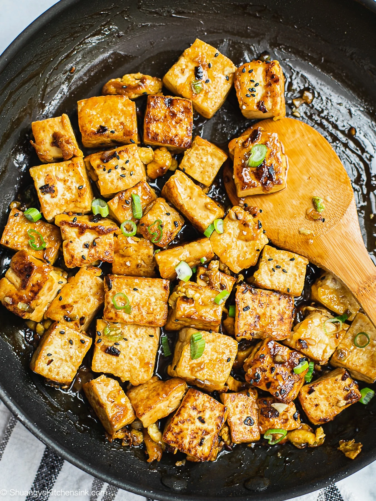

Garlic Tofu

Descriotion
Tofu, also known as bean curd, is a versatile and nutritious food made from soybeans. It's a staple in many Asian cuisines and has gained popularity worldwide due to its health benefits and adaptability in various dishes.
Ingredients
- 3 tablespoons canola oil
- 2 teaspoons minced garlic
- 2 teaspoons minced fresh ginger root
- 1 lime
- 1 tablespoon tamari, or to taste
- 2 pounds firm tofu
Steps
- Heat oil in a wok or skillet over medium heat. Stir in garlic and ginger, and cook for 1 minute. Add tofu to the pan with tamari and stir to coat. Cover, and continue cooking for 20 to 30 minutes.
- Squeeze lime juice over tofu before serving.
Home